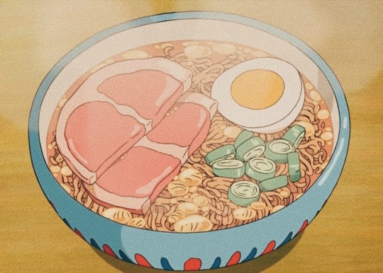

Ponyo Ramen

Ingredients:
- 1 package Nissin Chicken Ramen
- 13 ounces boiling water
- 1 thick slice cooked ham cut in half
- 1/2 hard boiled egg
- Chopped green onion
Steps:
- Have ham, egg, and green onions prepped.
- Boil the water.
- Place the noodles in a ramen bowl. Pour boiling water over the noodles and cover. Set and start your timer for three minutes.
- After the first minute, quickly open, shake the noodles to separate, then arrange the ham, egg, and green onion over the noodles. Cover again and wait until the timer alerts.
Recipe from ochikeron on YouTube. See original recipe here.